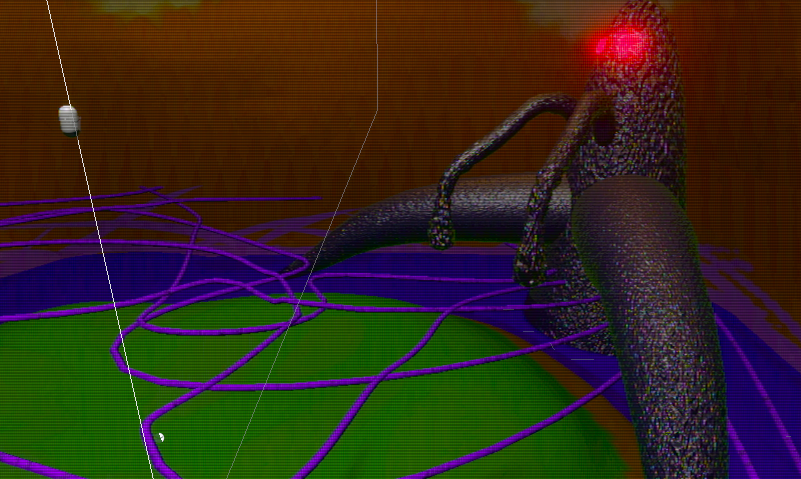

Mossaratus · Companion piece
Final Boss: Creation & Animation
A closer look at the boss I made for the final fight in Mossaratus.
Bringing the boss to life
In Mossaratus, the player moves through waves of enemies, returning to a shop between rounds. The final fight brings that journey to a close.
I modelled, rigged, animated and integrated the boss in Blender and Unity. Below are a timelapse of the work and a few of its animations.
Making the boss

Animation studies
Four movements from the boss, shown separately.
Looking back
The short testing period meant the boss fight ended up harder than we had planned. With more time, we would have adjusted the difficulty. I was still very satisfied with how the boss looked and fought, and it was interesting to see players take on the challenge.
Credits
Mossaratus team: Luís Antônio de Albuquerque Hollanda, Ernests Malnacs, Edina Depner and Tycho Heijmans.